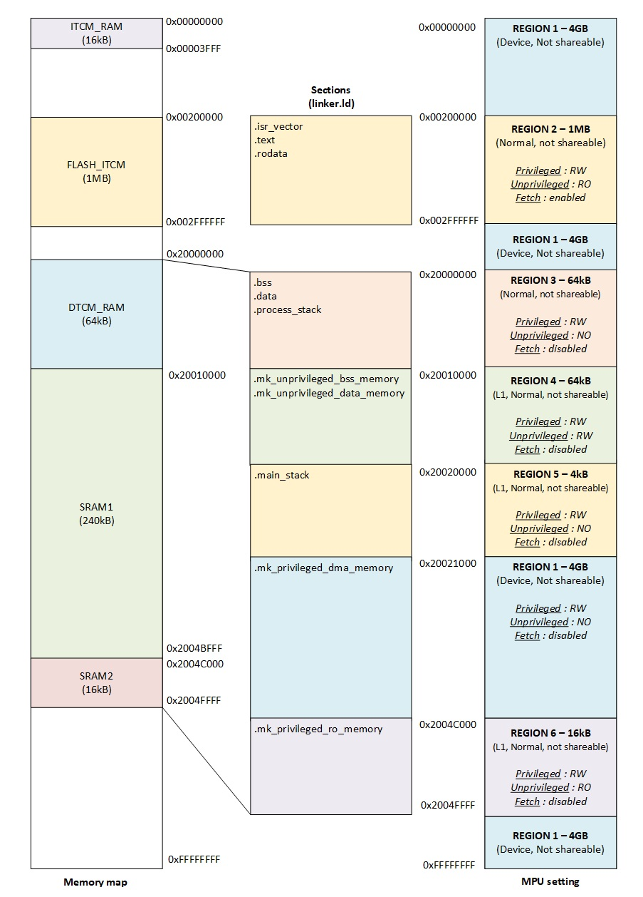

Le modèle de protection de Mk
Le noyau Mk implémente un environnement sécurisé qui isole les tâches critiques de l'espace utilisateur non privilégié. L'objectif est de limiter l'impact que pourrait avoir une tâche utilisateur ou un code arbitraire malveillant ou défectueux.
Le modèle de protection offert par Mk est simple. Il crée une barrière de protection entre le monde privilégié et le monde non privilégié. Néanmoins, il n'impose aucune restriction entre les tâches d'un même monde (une tâche privilégiée peut donc corrompre une autre tâche privilégiée au même titre qu'une tâche non privilégiée peut corrompre une autre tâche non privilégiée). Il n'y a donc pas d'isolation stricte entre tâches.
Le processeur Cortex-M7 n'implémente pas de MMU. Les mécanismes de protection de Mk reposent donc sur l'utilisation de la MPU (Memory Protection Unit), sur les droits attribués aux tâches et sur l'organisation mémoire du processeur.
1. Protection matérielle
L'isolation matérielle offerte par Mk repose sur les deux mécanismes suivants :
- ✔La configuration du bit nPRIV lors de chaque changement de contexte pour activer ou non le mode privilégié.
- ✔La configuration de la MPU pour définir les zones mémoires accessibles aux tâches privilégiées et non privilégiées.
D'une manière générale, une tâche privilégiée peut accéder à l'ensemble du système (instructions, registres, ...). A contrario, une tâche non privilégiée est plus contrainte et ne peut accéder qu'aux zones autorisées par la MPU. Un accès non autorisé dans une zone protégée déclenche une exception matérielle de type MemManage Fault.
2. Protection logicielle
L'isolation entre les tâches est aussi renforcée par une surveillance logicielle effectuée lors de chaque appel système. Les appels système étant exécutés en mode privilégié, le noyau s'assure qu'une tâche non privilégiée n'essaye pas d'accéder à des ressources qui lui sont interdites.
La liste ci-dessous décrit l'ensemble des accès ou des opérations non autorisés pour une tâche de type non privilégiée :
- ✔Créer, suspendre, redémarrer, supprimer ou modifier la priorité d'une tâche privilégiée.
- ✔Créer un allocateur mémoire ou une boîte de messages pointant vers un espace mémoire privilégié.
- ✔Écrire dans un espace mémoire privilégié en utilisant une boîte de messages partagée.
- ✔Supprimer ou manipuler un objet de synchronisation protégé.
- ✔Récupérer le taux de charge CPU.
Lorsqu'une opération interdite est détectée, le noyau annule l'appel système et déclenche le gestionnaire d'erreur mk_handler_rightFault dont l'implémentation est laissée libre à l'utilisateur.
De la même manière, lors de chaque appel système, le noyau contrôle la validité des instances fournies par l'utilisateur (adresse et alignement). Cela est rendu possible par l'écosystème de Mk qui pré-alloue l'ensemble de ces objets (tâches, sémaphores, ...) de manière statique à la compilation. Le noyau a donc connaissance de l'emplacement mémoire de chaque objet et peut donc réaliser un contrôle de validité lors de chaque appel système.
Lorsqu'une instance non valide est détectée, le noyau annule l'appel système et déclenche le gestionnaire d'erreur mk_handler_handleFault dont l'implémentation est laissée libre à l'utilisateur.
3. Fonctionnement de la MPU
La MPU du processeur Cortex-M7 est constituée de 8 ou 16 régions configurables (8 sur STM32F7). Chaque région permet d'appliquer une configuration spécifique à une plage de l'espace mémoire (niveau d'accès privilégié ou non, droits en lecture/écriture, politiques de cache, exécution d'instructions autorisée). Ces régions peuvent elles aussi être découpées en 8 sous-régions de taille égale pouvant être activées ou non. Les sous-régions ne sont utilisables que pour des régions d'au moins 256 octets.
La MPU est régie par les règles suivantes :
- ✔La taille d'une région doit être une puissance de 2 (de 32 octets à 4 Go).
- ✔L'adresse de base d'une région doit être alignée sur sa taille.
- ✔Lorsque 2 régions se recouvrent, les règles de la région avec le numéro le plus élevé s'appliquent.
Le noyau configure la MPU au démarrage du système en exécutant la fonction mk_system_mpu_init. Cette configuration est conservée tout au long de l'exécution du système (configuration statique).
4. Paramétrage de la MPU
Le paramétrage de la MPU est propre à chaque microcontrôleur. Ce paragraphe décrit la méthodologie à mettre en œuvre pour paramétrer la MPU en prenant pour exemple les microcontrôleurs STM32F74xxx et STM32F75xxx.
Pour une protection valide, la MPU doit être paramétrée en adéquation avec les sections du fichier d'édition de lien. La figure ci-dessous met en regard trois vues de l'organisation mémoire du microcontrôleur :

On retrouve le placement mémoire
du MCU à gauche, les sections définies dans le fichier d'édition de
liens au centre et la configuration
des 6 régions de la MPU utilisées à droite. Les régions sont indexées
K_
La carte mémoire du MCU est fournie par le fabricant et doit être reprise à l'identique dans le fichier d'édition de lien (linker.ld). Le fichier d'édition de lien contient l'ensemble des sections du programme et leur placement. On retrouve dans celui-ci les sections génériques imposées par le linker (.text, .rodata, .bss et .data) mais aussi les sections spécifiques au noyau qui servent à localiser les données dans les zones mémoires privilégiées et non privilégiées. La fonction mk_system_mpu_init contient la configuration des régions de la MPU. Elle reprend les mêmes adresses de base que le fichier d'édition de lien afin d'attribuer des permissions à chacune des sections. Afin de maintenir la sécurité de l'environnement, les deux fichiers doivent être modifiés conjointement. L'extrait de code ci-dessous montre un exemple de configuration avec une transposition d'adresse entre les deux fichiers :
/* Extrait du fichier d'édition de lien */ /* Définition de l'adresse de base des données privilégiées */ /* Mémoire K_DTCM_RAM */ /* Taille 65536 octets (0x10000) */ K_MK_PRIVILEGED_DATA_BASE_ADDR = 0x20000000 ; /* ... */ /* Organisation mémoire */ MEMORY { K_FLASH_ITCM ( rx ) : ORIGIN = 0x00200000, LENGTH = 0x100000 K_FLASH_AXIM ( rx ) : ORIGIN = 0x08000000, LENGTH = 0x100000 K_DTCM_RAM ( rw ) : ORIGIN = 0x20000000, LENGTH = 0x10000 K_ITCM_RAM ( rwx ) : ORIGIN = 0x00000000, LENGTH = 0x4000 K_SRAM1 ( rw ) : ORIGIN = 0x20010000, LENGTH = 0x3C000 K_SRAM2 ( rw ) : ORIGIN = 0x2004C000, LENGTH = 0x4000 } /* ... */ /* Définition des sections */ SECTIONS { /* Mapping de la section "bss" à l'adresse */ /* K_MK_PRIVILEGED_DATA_BASE_ADDR (0x20000000) */ .bss K_MK_PRIVILEGED_DATA_BASE_ADDR ( NOLOAD ) : ALIGN ( 4 ) { /* Création d'un symbole contenant l'adresse de début */ /* de la section BSS. */ K_BSS_START_ADDR = .; *( .bss ) . = ALIGN ( 4 ) ; /* Création d'un symbole contenant l'adresse de fin */ /* de la section BSS. */ K_BSS_END_ADDR = .; } > K_DTCM_RAM } /* Extrait du fichier mk_system_mpu_init.c */ /* DTCM_RAM : */ /* Cache L1 non utilisé */ /* Mode privilégié : RW */ /* Mode non privilégié : pas d'accès */ /* Fetch désactivé */ /* Sections : .bss, .data, .process_stack */ mpu_setRegion ( K_MPU_REGION3, 0x20000000, K_MPU_REGION_SIZE_64KB, K_MPU_TYPE_NORMAL_NOT_SHAREABLE, K_MPU_RW_PRIVILEGED_ACCESS_NO_UNPRIVILEGED_ACCESS | K_MPU_FETCH_DISABLED, K_MPU_SUBREGION_DEFAULT );
L'exemple ci-dessus montre la configuration pour la section .bss. Un procédé identique peut être appliqué aux autres sections et régions de la MPU pour couvrir l'ensemble des besoins de l'application.
5. Protection des périphériques
Dans la figure 1, on peut remarquer que la région 1 couvre l'intégralité de l'espace adressable (4 Go). Les attributs de cette région s'appliquent donc à l'ensemble des zones mémoire non couvertes par les régions 2 à 6 et notamment sur les espaces mémoire contenant les périphériques.
⚠️
Une tâche non privilégiée ne peut donc pas accéder aux registres matériels. De ce fait, il lui est impossible de déclencher un transfert DMA qui viendrait récupérer ou corrompre le contenu d'une mémoire privilégiée.
Cette précaution est nécessaire car les mécanismes de protection de la MPU ne filtrent pas les transactions mémoires réalisées par un contrôleur DMA. La configuration des périphériques doit donc être réservée exclusivement aux tâches privilégiées.
Afin d'ordonner correctement les accès aux périphériques, la région de la MPU couvrant les périphériques doit posséder l'attribut device pour interdire les accès spéculatifs et préserver l'ordre des accès.
La table ci-dessous présente les caractéristiques des différents types de régions du processeur Cortex-M7 :
| Type | Cache L1 | Accès spéculatifs | Ordre des accès |
|---|---|---|---|
| Normal cacheable | Oui | Possibles | Réordonnés |
| Normal non cacheable | Non | Possibles | Réordonnés |
| Device | Non | Interdits | Préservé |
De la même manière, pour maintenir la cohérence des données entre le CPU et les contrôleurs DMA, la région définissant la section .mk_privileged_dma_memory ne doit pas être cacheable et aucune région de numéro supérieur avec cet attribut ne doit la recouvrir.
Dans la figure 1, ces deux règles sont respectées par la région 1 qui occupe l'intégralité de l'espace adressable (4 Go) et possède les bons attributs. Cette région couvre le besoin à la fois pour les périphériques et la mémoire DMA.
6. Contexte d'interruption et MSP
Le noyau exécute l'ensemble de son travail dans un contexte d'interruption. Il utilise donc la pile principale (MSP). Les attributs de cette zone mémoire sont dictés par la région 5 de la MPU.
⚠️
Dans la situation où l'adresse ou la taille de la pile g_mkMainStack sont modifiées, les attributs de la région 5 doivent être reconfigurés en conséquence (adresse K_STACK_BASE_ADDR, taille et alignement).
7. Mécanismes de détection des zones non privilégiées
Le noyau détecte si une opération mémoire est effectuée dans une zone privilégiée en exécutant la
fonction
mk_
Cette fonction utilise les
symboles
K_
⚠️
De par le fonctionnement de la routine mk_
8. Le partage des données
Le noyau Mk déclare la plupart de ses données internes dans la section
.mk_
Lorsqu'une tâche demande au noyau de créer une tâche ou un objet de synchronisation, celui-ci fournit à la tâche demandeuse l'instance d'une de ces structures de données protégées. La séparation entre les deux mondes est donc conservée et le monde non privilégié ne peut pas venir écrire dans ces structures de données.
Néanmoins, il peut arriver qu'une tâche non privilégiée ait la nécessité de communiquer avec une tâche privilégiée. Le mécanisme de protection des objets de synchronisation permet de répondre à ce cas de figure.
Lorsqu'une tâche privilégiée ne souhaite pas partager l'utilisation d'un objet de synchronisation avec
une
tâche non
privilégiée, elle précise le paramètre K_
A contrario, lorsqu'un objet doit être partagé, la tâche peut spécifier le paramètre K_
9. Conclusion
Le modèle de protection proposé par Mk repose sur une barrière entre le monde privilégié et le monde non privilégié. Il est construit autour du bit nPriv, de la MPU et des contrôles effectués lors de chaque appel système.
La configuration de la MPU est propre à chaque cible. Lors d'un portage sur une nouvelle cible ou lors d'une modification, il est important de respecter les critères ci-dessous :
- ✔Le fichier d'édition de lien et la fonction mk_system_mpu_init doivent être modifiés conjointement car ils partagent les mêmes adresses de base.
- ✔Les périphériques doivent être en mémoire device. Aucune région cacheable ne doit recouvrir la section .mk_
privileged_ .dma_ memory - ✔La zone non privilégiée doit rester contiguë pour que la fonction mk_
memory_ fonctionne.isPrivilegedArea - ✔La taille ou l'adresse de la pile principale ne peuvent pas être modifiées sans reconfigurer la région 5.
Pour conclure, le modèle de protection proposé par Mk est simple mais celui-ci n'offre pas d'isolation complète entre tâches contrairement à certains noyaux disponibles sur le marché.
À terme, Mk offrira un niveau de protection équivalent. La configuration de la MPU ne sera plus statique mais mise à jour dynamiquement lors de chaque changement de contexte. Cette évolution apportera plus de flexibilité, au détriment de la simplicité de configuration.